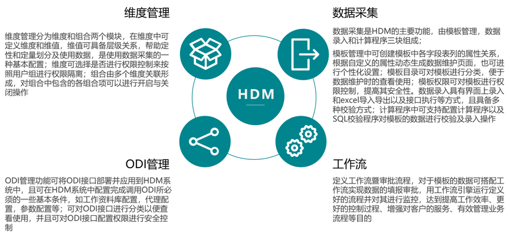
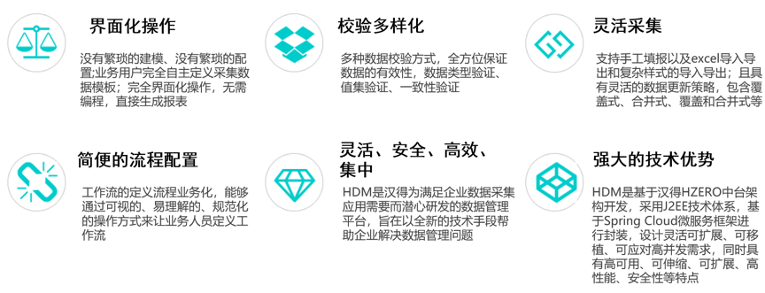

开始使用 ----当前版本1.2.0.1.0.RELEASE
在企业的发展中，数据采集及应用越来越受到企业决策和管理者的重视，尤其是近年来商务智能技术的兴起，企业在预算管理，报表合并，数据填报和清洗方面更需要专业化、精益化和快速化的利用自身数据获得商业价值。 越来越多具有规模的企业开始重视和需求一个全面的快速的支持数据采集和应用的平台来助力企业数据采集管理，加速企业价值的实现。
汉得数据管理平台是汉得根据多年数据采集分析项目实施经验，并结合数据应用需求研发的一套企业数据采集工具，它包含维度管理、数据采集、ODI管理、任务管理、系统管理、组织管理、开发管理、消息管理、调度平台、工作流和审计管理等功能，为企业提供全方位的数据采集及应用服务。



本文档主要介绍了HDM产品理念、产品手册、常见问题等。
汉得自研产品数据采集平台，以下简称HDM，在初版的基础上优化用户体验，修复若干初版未解决的疑难问题。本产品支持全数据量级别的多语言，支持Mysql、Oracle、Mssql三种不同的数据库作为数据源。目前包含的功能模块有: 维度维值、数据采集、ODI、工作流。并将不断完善，帮助各个企业完成数据采集的工作。
HDM初版是基于HAP3.0.14版，新版是基于HZero最新版开发的，现决定HDM的版本号是在HZero大版本的后边加上自己的小版本，举例: HZero版本为1.2.0.RELEASE，HDM相对应的第一个发布版本就是1.2.0.1.0.RELEASE，其中第四位1表示HDM的大版本，当且仅当重大功能变更或新增时增加，第五位0表示HDM的修正版本，当修复严重bug或者优化部分功能时增加。HDM会不定时更新版本，详情可以参考版本变更日志，考虑升级事项。
本手册仅供汉得内部交流沟通，仅提供HDM中常用功能介绍和使用说明，如有使用问题或系统bug请联系研发组同事，谢谢。所有的系统demo可以参考QuickStart，将带领大家快速创建系统。